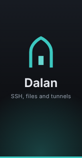

NSIS (Modern UI 2) at 100% scale, Windows 11 light. The artwork is real (installer-sidebar.bmp, installer-header.bmp); the window chrome is approximate. Two editions: the default “just me” installer (no administrator rights, shown here) and an all-users installer (page 2). Pages 4 and U1 are new custom pages; the others are Tauri's default pages with our copy.
1 · Welcome

This sets up Dalan 0.1.2, a calm desktop client for your servers: SSH, files and tunnels in one place.
It installs Dalan for you only, without administrator rights. For everyone on this PC, use the all-users installer.
Your vault, keys and passwords stay on this computer. Setup doesn't touch them.
2 · All-users edition: folder (after the Windows admin prompt)
Setup will install Dalan in this folder. To use a different one, click Browse.
Each person who signs in to this PC has their own vault and settings. Updates to this copy ask for administrator rights.
3 · Folder
Setup will install Dalan in this folder. To use a different one, click Browse.
Space required: 24.6 MB
Space available: 182.3 GB
4 · Options (custom page)
Links in your browser or chat like ssh://deploy@10.0.0.5 open a new tab in Dalan. Dalan always asks before connecting.
Another app currently opens these links: PuTTY. Ticking this makes Dalan open them instead.
Useful if tunnels start when Dalan unlocks.
5 · Installing
Copying files…
6 · Finish
Dalan 0.1.2 is installed.
The first time, Dalan asks you to choose a master password. Keep it in your password manager: there's no way to recover it.
A · Already installed (default reinstall page, our copy)
U1 · Uninstall: your data (custom page)
Dalan will be removed from this PC.
U2 · Uninstall: done
Your vault and settings were kept in:
%APPDATA%\app.dalan.desktop
Install Dalan again any time to use them.